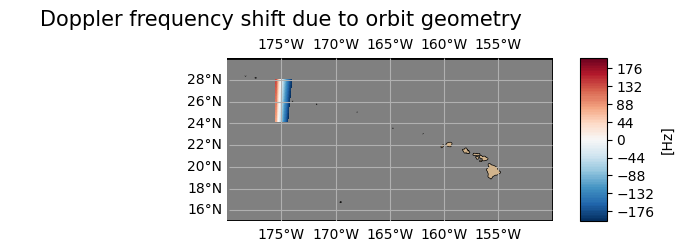
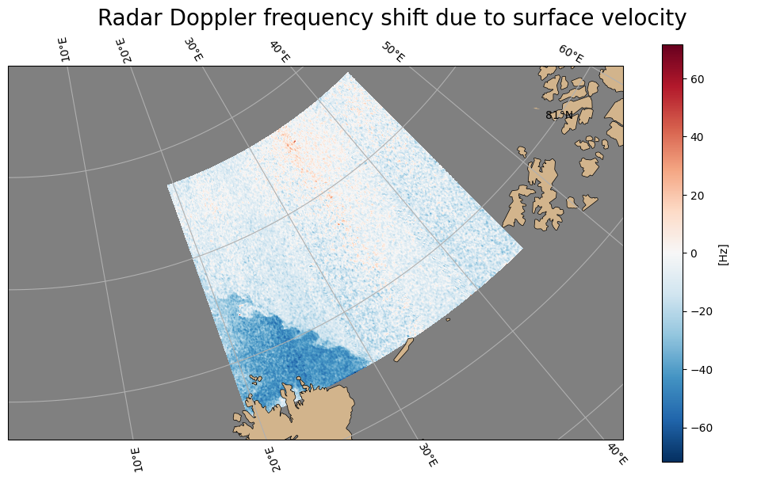

Plot Data on a Map#
Work in progress notebook#
import xarray as xr
ds = xr.open_dataset('https://thredds.met.no/thredds/dodsC/remotesensingenvisat/asar-doppler/2012/01/27/ASA_WSDV2PRNMI20120127_215005_000612433111_00101_51839_0000.nc')
ds
<xarray.Dataset> Size: 45MB
Dimensions: (y: 602, x: 851)
Dimensions without coordinates: y, x
Data variables: (12/22)
sensor_view_angle (y, x) float32 2MB ...
sigma0 (y, x) float32 2MB ...
subswaths (y, x) float32 2MB ...
incidence_angle (y, x) float32 2MB ...
sensor_azimuth (y, x) float32 2MB ...
dc (y, x) float32 2MB ...
... ...
wind_speed (y, x) float32 2MB ...
fdg (y, x) float32 2MB ...
u_range (y, x) float32 2MB ...
std_u_range (y, x) float32 2MB ...
longitude (y, x) float32 2MB ...
latitude (y, x) float32 2MB ...
Attributes: (12/75)
GDAL: GDAL 3.2.1, released 2020/12/29
acknowledgement: GSAR IDL pre-processing software was develope...
azimuth_start_time: 2012-01-27T21:50:05.173597
contributor_email: jeong-won.park@kopri.re.kr, hjoh@norceresearc...
contributor_institution: Korea Polar Research Institute (KOPRI), NORCE...
contributor_name: Jeong-Won Park, Harald Johnsen, Geir Engen
... ...
ysamplefreq_slc: 1711.9144385026736
ysize: 629
ytime: 2012-01-27T21:50:05.173597Z
ytime_slc: 2012-01-27T21:50:04.077748
summary_no: Kalibrert geofysisk Dopplerskift fra ENVISAT ...
title_no: Kalibrert geofysisk ENVISAT ASAR Dopplerskift...ds.sigma0.plot()
<matplotlib.collections.QuadMesh at 0x77d11d3965f0>

Below is a code snippet which easily extracts the wanted files from “Downloads” (given a recognicable part of their filenames) meant for extracting files which have been downloaded.#
# how to open data when downloaded from the staging page: https://data-staging.met.no/metsis/elements/no-met-staging-e19b9c36-a9dc-4e13-8827-c998b9045b54/search
import os
import glob
import xarray as xr
import pandas as pd
import matplotlib.pyplot as plt
import numpy as np
import cartopy.crs as ccrs
import cartopy.feature as cfeature
from cartopy.mpl.gridliner import LONGITUDE_FORMATTER, LATITUDE_FORMATTER
from matplotlib.colors import TwoSlopeNorm
import matplotlib as mpl
from mpl_toolkits.axes_grid1.inset_locator import inset_axes
# Get the path of the home directory
home_dir = os.path.expanduser("~")
# Use os.path.join to combine paths
path2files = os.path.join(home_dir, "Downloads") # "Dowloads" --> path to files
# Specify something to recognice the desired nc-files, extract them and put them in a list
desired_files_paths = glob.glob(os.path.join(path2files, "ASA_*.nc"))
# print(desired_files_paths)
'''
# Create a list of desired files
files2open = []
for i in range(len(desired_files_paths)):
ith_file = desired_files_paths[i].replace(path2files+'/', '')
print(ith_file)
files2open.append(ith_file)
print(files2open)
#'''
# Open the first dataset
ds = xr.open_dataset(desired_files_paths[0])
# print(desired_files_paths[0])
# Interactive overview of the dataset
ds
<xarray.Dataset> Size: 45MB
Dimensions: (y: 602, x: 851)
Dimensions without coordinates: y, x
Data variables: (12/22)
sensor_view_angle (y, x) float32 2MB ...
sigma0 (y, x) float32 2MB ...
subswaths (y, x) float32 2MB ...
incidence_angle (y, x) float32 2MB ...
sensor_azimuth (y, x) float32 2MB ...
dc (y, x) float32 2MB ...
... ...
wind_speed (y, x) float32 2MB ...
fdg (y, x) float32 2MB ...
u_range (y, x) float32 2MB ...
std_u_range (y, x) float32 2MB ...
longitude (y, x) float32 2MB ...
latitude (y, x) float32 2MB ...
Attributes: (12/75)
GDAL: GDAL 3.2.1, released 2020/12/29
acknowledgement: GSAR IDL pre-processing software was develope...
azimuth_start_time: 2012-01-27T21:50:05.173597
contributor_email: jeong-won.park@kopri.re.kr, hjoh@norceresearc...
contributor_institution: Korea Polar Research Institute (KOPRI), NORCE...
contributor_name: Jeong-Won Park, Harald Johnsen, Geir Engen
... ...
ysamplefreq_slc: 1711.9144385026736
ysize: 629
ytime: 2012-01-27T21:50:05.173597Z
ytime_slc: 2012-01-27T21:50:04.077748
summary_no: Kalibrert geofysisk Dopplerskift fra ENVISAT ...
title_no: Kalibrert geofysisk ENVISAT ASAR Dopplerskift...# Same file that is inspected above
# ds = xr.open_dataset('ASA_WSDV2PRNMI20120127_215005_000612433111_00101_51839_0000.nc') # It is altered as seen above - this is then the old version
# ds
Plotting Function#
Below is an easy to use plotting function which visualize your desired data variable on a map. There is also possible to set the spatial extent of the plot yourself - default is just plotting the spatial extent of the variable itself as defined in the metadata.
# Original plotting function
'''
def plotting_variables_on_a_map(variable, number_of_colorbar_intervals, lat_min = ds.geospatial_lat_min, lat_max = ds.geospatial_lat_max, lon_min = ds.geospatial_lon_min, lon_max = ds.geospatial_lon_max): # var_min, var_max, var_step
# Create a linear space for latitude and longitude
lat = np.linspace(ds.geospatial_lat_min, ds.geospatial_lat_max, ds.sizes['y'])
lon = np.linspace(ds.geospatial_lon_min, ds.geospatial_lon_max, ds.sizes['x'])
# Create a new xarray DataArray with latitude and longitude as coordinates
variable_with_coords = xr.DataArray(variable.values, coords=[('lat', lat), ('lon', lon)], dims=['y', 'x'])
# Assign variable attributes from the original variable DataArray
variable_with_coords.attrs = variable.attrs
# Now select your slice - defined by the latitudinal and longitudinal extent of the data
plotable_variable = variable_with_coords.sel(x=slice(ds.geospatial_lon_min, ds.geospatial_lon_max), y=slice(ds.geospatial_lat_min, ds.geospatial_lat_max))
# Ready to plot the variable on a map using subplot package of matplotlib.pyplot
fig, ax = plt.subplots(1, figsize=(7, 7))
fig.suptitle(f'{plotable_variable.long_name}', fontsize = 15)
ax.axis('off') # Turn off axes
# Set the projection
ax = plt.axes(projection=ccrs.PlateCarree())
ax.coastlines() # Add coastlines
# Create the gridlines and configure the labels
gl = ax.gridlines(draw_labels=True)
gl.bottom_labels = True # Default
gl.left_labels = True # Default
gl.top_labels = False # Not default
gl.right_labels = False # Not default
# Defining var_min, var_max and var_step --- using the variable attribute minmax to extract var_min and var_max
var_min = int(plotable_variable.minmax.split(' ')[0])
var_max = int(plotable_variable.minmax.split(' ')[1])
var_step = ((var_max - var_min) / number_of_colorbar_intervals)
var_max = int(plotable_variable.minmax.split(' ')[1]) + var_step # redefining the max val to improve visuals of colorbar around center
# Plot the data
plotable_variable.plot.contourf(ax=ax, x='x', y='y',
extend='neither',
norm=TwoSlopeNorm(vmin=var_min, vcenter=0, vmax=var_max),
levels=np.arange(var_min, var_max, var_step),
cbar_kwargs = {'label': f'[{plotable_variable.units}]'}
)
# Setting the extent on the map that is plotted
ax.set_ylim(lat_min, lat_max)
ax.set_xlim(lon_min, lon_max)
plt.tight_layout()
plt.show()
#'''
print('More primitive version of the plotting_variables_on_a_map function. Visuals are not necessarily always optimal.')
More primitive version of the plotting_variables_on_a_map function. Visuals are not necessarily always optimal.
def plotting_variables_on_a_map(variable, number_of_colorbar_intervals = 100,
lat_min = ds.geospatial_lat_min, lat_max = ds.geospatial_lat_max,
lon_min = ds.geospatial_lon_min, lon_max = ds.geospatial_lon_max,
fractional_title_spacing = 0.05,
title_fontsize = 15,
cbar_label_fontsize = 12):
# Create a linear space for latitude and longitude
lat = np.linspace(ds.geospatial_lat_min, ds.geospatial_lat_max, ds.sizes['y'])
lon = np.linspace(ds.geospatial_lon_min, ds.geospatial_lon_max, ds.sizes['x'])
# Create a new xarray DataArray with latitude and longitude as coordinates
variable_with_coords = xr.DataArray(variable.values, coords=[('lat', lat), ('lon', lon)], dims=['y', 'x'])
# Assign variable attributes from the original variable DataArray
variable_with_coords.attrs = variable.attrs
# Now select your slice - defined by the latitudinal and longitudinal extent of the data
plotable_variable = variable_with_coords.sel(x=slice(ds.geospatial_lon_min, ds.geospatial_lon_max), y=slice(ds.geospatial_lat_min, ds.geospatial_lat_max))
# Ready to plot the variable on a map using subplot package of matplotlib.pyplot
# Create the main plot and set the projection
fig, ax = plt.subplots(1, figsize=(7, 7), subplot_kw={'projection': ccrs.PlateCarree()})
ax.axis('off') # Turn off axes
ax.coastlines() # Add coastlines
# Add a black rectangle around the map
rectangle = plt.Rectangle((lon_min, lat_min), lon_max-lon_min, lat_max-lat_min,
fill=None, edgecolor='black', linewidth=2)
ax.add_patch(rectangle)
# Create the gridlines and configure the labels
gl = ax.gridlines(draw_labels=True)
gl.bottom_labels = True # Default
gl.left_labels = True # Default
gl.top_labels = True # Default
gl.right_labels = False # Not default
# Defining var_min, var_max and var_step --- using the variable attribute minmax to extract var_min and var_max
var_min = int(plotable_variable.minmax.split(' ')[0])
var_max = int(plotable_variable.minmax.split(' ')[1])
var_step = ((var_max - var_min) / number_of_colorbar_intervals)
var_max = int(plotable_variable.minmax.split(' ')[1]) + var_step # redefining the max val to improve visuals of colorbar around center
# Add features for land and ocean
ax.add_feature(cfeature.LAND, facecolor='tan', zorder=2) # Tan color for land - Placed as number three in line for plotting
# ax.add_feature(cfeature.OCEAN, facecolor='lightblue', zorder=0) # Light blue color for ocean
ax.add_feature(cfeature.OCEAN, facecolor='grey', zorder=0) # Light blue color for ocean - Placed first in luine for plotting
# Plot the data
cax = plotable_variable.plot.contourf(ax=ax, x='x', y='y',
extend='neither',
norm=TwoSlopeNorm(vmin=var_min, vcenter=0, vmax=var_max),
levels=np.arange(var_min, var_max, var_step),
add_colorbar=False, # Do not automatically add colorbar
zorder = 1
)
# Create an inset axes for the colorbar
cbar_ax = inset_axes(ax,
width="5%", # width = 5% of parent_bbox width
height="100%", # height : 100% of parent_bbox height
loc='lower left',
bbox_to_anchor=(1.05, 0., 1, 1),
bbox_transform=ax.transAxes,
borderpad=0
)
# Create colorbar
cbar = fig.colorbar(cax, cax=cbar_ax, orientation='vertical')
cbar.set_label(f'[{plotable_variable.units}]', fontsize = cbar_label_fontsize) # Extract units from the plotted variable and use as label for colorbar
# Set and adjust title
mid_lat = (lat_min + lat_max) / 2
mid_lon = (lon_min + lon_max) / 2
ax.text(mid_lon, lat_max + ((lat_max - lat_min) * fractional_title_spacing), f'{plotable_variable.long_name}',
fontsize=title_fontsize, ha='center')
# Setting the extent on the map that is plotted
ax.set_ylim(lat_min, lat_max)
ax.set_xlim(lon_min, lon_max)
plt.show()
Plotting Examples#
# Plotting the desired variable within its geographical extent - By default using the metadata for the geographical extent as lat/lon min/max values.
# Plotting fdg
plotting_variables_on_a_map(variable = ds.fdg,
number_of_colorbar_intervals = 100, # Default value
title_fontsize = 15, # Default value
cbar_label_fontsize = 12 # Default value
)

# Determine the spatial extent for yourself:
# Plotting fdg
plotting_variables_on_a_map(variable = ds.fdg,
lat_min = 15, lat_max = 30,
lon_min = -200, lon_max = -150,
number_of_colorbar_intervals = 100, # Default value
fractional_title_spacing = 0.20, # Default 0.05
title_fontsize = 15, # Default value
cbar_label_fontsize = 10 # Default 12
)

# Plotting fgeo
plotting_variables_on_a_map(variable = ds.fgeo,
# lat_min = 20, lat_max = 50,
# lon_min = -85, lon_max = -65
lat_min = 15, lat_max = 30,
lon_min = -200, lon_max = -150,
number_of_colorbar_intervals = 100, # Default value
fractional_title_spacing = 0.20, # Default 0.05
title_fontsize = 15, # Default value
cbar_label_fontsize = 10 # Default 12
)

# Plotting fww
plotting_variables_on_a_map(variable = ds.fww,
lat_min = 15, lat_max = 30,
lon_min = -200, lon_max = -150,
number_of_colorbar_intervals = 100, # Default value
fractional_title_spacing = 0.20, # Default 0.05
title_fontsize = 15, # Default value
cbar_label_fontsize = 10 # Default 12
)

# Plotting half the world for the sake of it
# Plotting fdg
plotting_variables_on_a_map(variable = ds.fdg,
lat_min = -90, lat_max = 90,
lon_min = -180, lon_max = 0,
number_of_colorbar_intervals = 100, # Default value
fractional_title_spacing = 0.08, # Default 0.05
title_fontsize = 20, # Default 15
cbar_label_fontsize = 15 # Default 12
)

Plotting another file with a Polar projection#
def ArcticPlot_variables_on_a_map(dataset,
variable,
map_start_longitude = -180,
map_end_longitude = 180,
map_edge_latitude = 60,
map_center_latitude = 90,
fractional_title_spacing = 0.05,
title_fontsize = 15):
# Create a linear space for latitude and longitude
lat = np.linspace(dataset.geospatial_lat_min, dataset.geospatial_lat_max, dataset.sizes['y'])
lon = np.linspace(dataset.geospatial_lon_min, dataset.geospatial_lon_max, dataset.sizes['x'])
# Create a new xarray DataArray with latitude and longitude as coordinates
variable_with_coords = xr.DataArray(variable.values, coords=[('lat', lat), ('lon', lon)], dims=['y', 'x'])
# Assign variable attributes from the original variable DataArray
variable_with_coords.attrs = variable.attrs
# Now select your slice - defined by the latitudinal and longitudinal extent of the data
plotable_variable = variable_with_coords.sel(x=slice(dataset.geospatial_lon_min, dataset.geospatial_lon_max), y=slice(dataset.geospatial_lat_min, dataset.geospatial_lat_max))
fig, ax = plt.subplots(1, figsize=(10, 6))
fig.suptitle(f'{variable.long_name}', fontsize = title_fontsize)
ax.axis('off') # These do no longer make sense and are just a nuisance
# Set the projection
ax = plt.axes(projection=ccrs.NorthPolarStereo()) # Selecting a projection with the North Pole in its center.
ax.coastlines() # Adding coastlines
ax.set_extent([map_start_longitude, map_end_longitude, map_edge_latitude, map_center_latitude], crs=ccrs.PlateCarree()) # Lower Boundry of 65 deg North to just evaluate the Arctic.
# Add features for land and ocean
ax.add_feature(cfeature.LAND, facecolor='tan', zorder=2) # Tan color for land - Placed as number three in line for plotting
# ax.add_feature(cfeature.OCEAN, facecolor='lightblue', zorder=0) # Light blue color for ocean
ax.add_feature(cfeature.OCEAN, facecolor='grey', zorder=0) # Light blue color for ocean - Placed first in luine for plotting
# For contourf
# var_min = int(variable.min())
# var_max = int(variable.max())
# var_step = (var_max - var_min) / steps
# Plot the data
# variable.plot.contourf(ax=ax, x='longitude', y='latitude',
# transform=ccrs.PlateCarree(), # added transform argument
# extend='both',
# levels=np.arange(var_min, var_max, var_step),
# cbar_kwargs = {'label': f'[{variable.units}]'},
# cmap='Blues_r', # "_r" --> inverse of the selected cmap
# zorder = 1 # Placed second in line for plotting
# )
plotable_variable.plot.pcolormesh(ax=ax, x='x', y='y',
transform=ccrs.PlateCarree(), # added transform argument
extend='neither',
# levels=np.arange(var_min, var_max, var_step),
cbar_kwargs = {'label': f'[{variable.units}]'},
# cmap='Blues_r', # "_r" --> inverse of the selected cmap
zorder = 1 # Placed second in line for plotting
)
gl = ax.gridlines(draw_labels=True)
plt.tight_layout()
plt.show()
return
ds_arctic = xr.open_mfdataset('ASA_WSDH2PRNMI20120322_111545_000623843113_00023_52623_0000.nc') # Downloaded
# Havent gotten these to work
# ds_arctic = xr.open_mfdataset('https://thredds.met.no/thredds/dodsC/remotesensingenvisat/asar-doppler/2012/03/22/ASA_WSDH2PRNMI20120322_111545_000623843113_00023_52623_0000.nc') # OPeNDAP
# ds_arctic = xr.open_mfdataset('https://thredds.met.no/thredds/dodsC/remotesensingenvisat/asar-doppler/2012/03/22/ASA_WSDH2PRNMI20120322_111545_000623843113_00023_52623_0000.nc', engine='zarr') # OPeNDAP
ds_arctic
<xarray.Dataset> Size: 46MB
Dimensions: (y: 611, x: 847)
Dimensions without coordinates: y, x
Data variables: (12/22)
sensor_view_angle (y, x) float32 2MB dask.array<chunksize=(611, 847), meta=np.ndarray>
sigma0 (y, x) float32 2MB dask.array<chunksize=(611, 847), meta=np.ndarray>
subswaths (y, x) float32 2MB dask.array<chunksize=(611, 847), meta=np.ndarray>
incidence_angle (y, x) float32 2MB dask.array<chunksize=(611, 847), meta=np.ndarray>
sensor_azimuth (y, x) float32 2MB dask.array<chunksize=(611, 847), meta=np.ndarray>
dc (y, x) float32 2MB dask.array<chunksize=(611, 847), meta=np.ndarray>
... ...
wind_speed (y, x) float32 2MB dask.array<chunksize=(611, 847), meta=np.ndarray>
fdg (y, x) float32 2MB dask.array<chunksize=(611, 847), meta=np.ndarray>
u_range (y, x) float32 2MB dask.array<chunksize=(611, 847), meta=np.ndarray>
std_u_range (y, x) float32 2MB dask.array<chunksize=(611, 847), meta=np.ndarray>
longitude (y, x) float32 2MB dask.array<chunksize=(611, 847), meta=np.ndarray>
latitude (y, x) float32 2MB dask.array<chunksize=(611, 847), meta=np.ndarray>
Attributes: (12/75)
GDAL: GDAL 3.2.1, released 2020/12/29
acknowledgement: GSAR IDL pre-processing software was develope...
azimuth_start_time: 2012-03-22T11:15:45.996631
contributor_email: jeong-won.park@kopri.re.kr, hjoh@norceresearc...
contributor_institution: Korea Polar Research Institute (KOPRI), NORCE...
contributor_name: Jeong-Won Park, Harald Johnsen, Geir Engen
... ...
ysamplefreq_slc: 1711.9144385026736
ysize: 640
ytime: 2012-03-22T11:15:45.996631Z
ytime_slc: 2012-03-22T11:15:44.997749
summary_no: Kalibrert geofysisk Dopplerskift fra ENVISAT ...
title_no: Kalibrert geofysisk ENVISAT ASAR Dopplerskift...# The entire Arctic
ArcticPlot_variables_on_a_map(dataset = ds_arctic,
variable = ds_arctic.fdg,
map_start_longitude = -180,
map_end_longitude = 180,
map_edge_latitude = 65, # Default 60
map_center_latitude = 90, # Default 90
title_fontsize = 20 # Default 15
)

# North of Svalbard
ArcticPlot_variables_on_a_map(dataset = ds_arctic,
variable = ds_arctic.fdg,
map_start_longitude = -180,
map_end_longitude = 180,
map_edge_latitude = 80, # Default 60
map_center_latitude = 90, # Default 90
title_fontsize = 20 # Default 15
)

# A quarter of the sphere covering the desired area
ArcticPlot_variables_on_a_map(dataset = ds_arctic,
variable = ds_arctic.fdg,
map_start_longitude = 0,
map_end_longitude = 90,
map_center_latitude = 90, # Default 90
map_edge_latitude = 80.5, # Default 60
title_fontsize = 20 # Default 15
)

# Zooming into the desired area
ArcticPlot_variables_on_a_map(dataset = ds_arctic,
variable = ds_arctic.fdg,
map_start_longitude = 0,
map_end_longitude = 60,
map_center_latitude = 81, # Default 90
map_edge_latitude = 80.5, # Default 60
title_fontsize = 20 # Default 15
)
